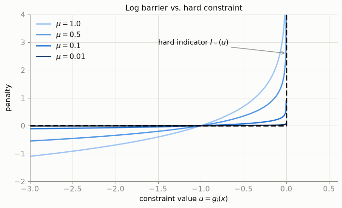
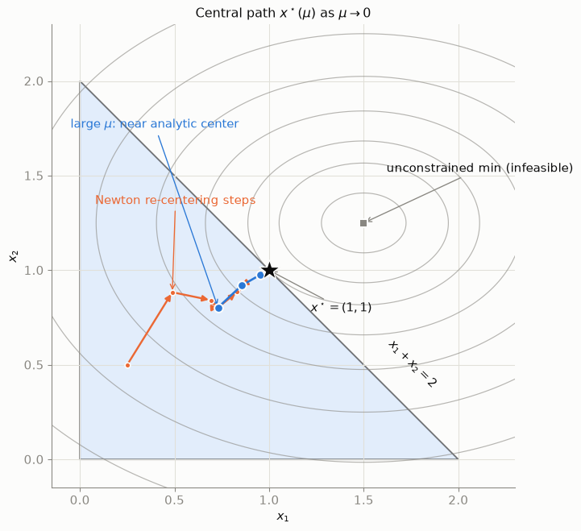
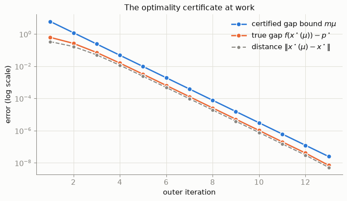

flowchart LR
LP["LP<br/>linear objective,<br/>linear constraints"] --> QP["QP<br/>quadratic objective,<br/>linear constraints"]
QP --> SOCP["SOCP<br/>second-order<br/>cone constraints"]
SOCP --> SDP["SDP<br/>semidefinite<br/>matrix constraints"]
LP -.- LPex["network flows,<br/>resource allocation"]
QP -.- QPex["Markowitz, SVM,<br/>LASSO, MPC"]
SDP -.- SDPex["control synthesis,<br/>relaxations"]

Convex optimization minimizes a convex objective over a convex feasible set. For such problems:
- Any local minimum is global.
- Dual multipliers certify optimality.
- Interior point methods (IPMs) solve LP/QP/SOCP/SDP in polynomial time.
IPMs replace hard inequality constraints with smooth log barriers, trace a central path through the strict interior, and shrink a barrier parameter \(\mu\to0\) while re-solving with Newton’s method.
1 Convex sets
Definition: Convex set
A set \(C \subseteq \mathbb{R}^n\) is convex if
\[ x, y \in C,\ \theta \in [0, 1] \quad \Longrightarrow \quad \theta x + (1-\theta)y \in C. \]
Examples:
- Hyperplane \(\{x : a^T x = b\}\).
- Halfspace \(\{x : a^T x \le b\}\).
- Norm ball \(\{x : \lVert x - c \rVert \le r\}\).
- Probability simplex \(\{x : x \succeq 0,\ \mathbf{1}^T x = 1\}\).
- Any intersection of convex sets.
2 Convex functions
Definition: Convex function
\(f : \mathbb{R}^n \to \mathbb{R}\) with convex domain is convex if
\[ f\big(\theta x + (1-\theta) y\big) \;\le\; \theta f(x) + (1-\theta) f(y), \qquad \forall\, x, y \in \operatorname{dom} f,\ \theta \in [0,1]. \]
For differentiable \(f\):
- First-order: \(f(y) \ge f(x) + \nabla f(x)^T (y - x)\) — tangent plane is a global underestimator.
- Second-order: \(\nabla^2 f(x) \succeq 0\) everywhere.
3 Local minima are global
Theorem — no false bottoms
If \(f\) is convex, \(C\) is convex, and \(x^\star \in C\) is a local minimum of \(f\) over \(C\), then \(x^\star\) is a global minimum.
Proof sketch.
- Local minimum: \(f(x^\star) \le f(x)\) for \(\lVert x - x^\star \rVert \le \varepsilon\).
- Suppose \(f(y) < f(x^\star)\) for some feasible \(y\).
- Set \(z_\theta = (1-\theta)x^\star + \theta y \in C\) by convexity of \(C\).
- Choose \(\theta>0\) small enough that \(\lVert z_\theta - x^\star \rVert \le \varepsilon\).
- Convexity of \(f\) gives \(f(z_\theta) < f(x^\star)\) — contradiction.
Any algorithm that finds local minima on convex problems finds global minima.
4 Standard form
\[ \begin{aligned} \min_{x \in \mathbb{R}^n} \quad & f(x) \\ \text{subject to} \quad & g_i(x) \le 0, \quad i = 1, \dots, m \\ & h_j(x) = a_j^T x - b_j = 0, \quad j = 1, \dots, p. \end{aligned} \]
| Component | Requirement |
|---|---|
| Objective \(f(x)\) | convex |
| Inequalities \(g_i(x)\le0\) | each \(g_i\) convex |
| Equalities \(h_j(x)=0\) | each \(h_j\) affine |
- Convex \(g_i\): sublevel set \(\{x:g_i(x)\le0\}\) is convex.
- Equalities must be affine: \(h\) convex and \(-h\) convex \(\Rightarrow\) \(h\) affine.
Non-affine equality failure
\(h(x)=x_1^2+x_2^2-1\): inequality \(h\le0\) is the unit disk (convex); equality \(h=0\) is the unit circle (nonconvex). Curved equalities destroy convexity guarantees.
5 Problem classes
Nested hierarchy:
| Application | Class | Objective | Constraints |
|---|---|---|---|
| Markowitz portfolios | QP | \(w^T\Sigma w\) | return, budget, no short |
| Network flows | LP | linear cost | capacity, conservation |
| SVM | QP | \(\tfrac12\lVert w\rVert^2 + C\sum\xi_i\) | margin |
| LASSO | QP | \(\tfrac12\lVert Ax-b\rVert^2 + \lambda\lVert x\rVert_1\) | (via \(-t\preceq x\preceq t\)) |
| MPC | QP/SOCP | tracking cost | dynamics, limits |
5.1 Markowitz portfolio
\[ \begin{aligned} \min_{w} \quad & w^T \Sigma w \\ \text{s.t.} \quad & \mu^T w \ge r_{\min}, \quad \mathbf{1}^T w = 1, \quad w \succeq 0. \end{aligned} \]
Return-constraint multiplier is marginal risk price (shadow price; Section 6).
5.2 Network flow LP
\[ \begin{aligned} \min_{x} \quad & \sum_{(u,v)} c_{uv}\, x_{uv} \\ \text{s.t.} \quad & \textstyle\sum_{u} x_{uv} - \sum_{w} x_{vw} = d_v \quad \forall v \\ & 0 \le x_{uv} \le k_{uv}. \end{aligned} \]
Karmarkar’s 1984 interior-point method ended simplex monopoly on large LPs.
5.3 SVM (QP)
\[ \begin{aligned} \min_{w, b, \xi} \quad & \tfrac{1}{2}\lVert w \rVert_2^2 + C \sum_{i=1}^N \xi_i \\ \text{s.t.} \quad & y_i\,(w^T x_i + b) \ge 1 - \xi_i, \quad \xi_i \ge 0. \end{aligned} \]
Dual problem yields kernel trick; complementary slackness gives support-vector sparsity.
5.4 LASSO
\[ \min_{x} \;\; \tfrac{1}{2} \lVert A x - b \rVert_2^2 + \lambda \lVert x \rVert_1 \quad\Longleftrightarrow\quad \min_{x,\,t} \;\; \tfrac{1}{2} \lVert A x - b \rVert_2^2 + \lambda\, \mathbf{1}^T t \;\;\text{s.t.}\;\; -t \preceq x \preceq t. \]
5.5 Model predictive control
\[ \begin{aligned} \min \quad & \sum_{k=0}^{T-1} \big( x_k^T Q x_k + u_k^T R u_k \big) + x_T^T Q_f x_T \\ \text{s.t.} \quad & x_{k+1} = A x_k + B u_k, \quad u_{\min} \preceq u_k \preceq u_{\max}, \quad F x_k \preceq g. \end{aligned} \]
Dynamics enter as affine equalities (Section 4). Solves must finish within control tick (10–100 ms).
6 Duality
6.1 Lagrangian
\[ L(x, \lambda, \nu) = f(x) + \sum_{i=1}^m \lambda_i\, g_i(x) + \sum_{j=1}^p \nu_j\, h_j(x), \]
with \(\lambda \succeq 0\) for inequalities, unconstrained \(\nu\) for equalities.
Interpretations
- Mechanics: \(\nabla f + \sum_i \lambda_i \nabla g_i = 0\) is force balance at a wall.
- Economics: \(\lambda_i\) is shadow price — marginal value of relaxing constraint \(i\).
6.2 Dual function and problem
\[ q(\lambda, \nu) = \inf_{x} L(x, \lambda, \nu). \]
\(q\) is concave (pointwise infimum of affine functions). Dual problem:
\[ \max_{\lambda \succeq 0,\ \nu} q(\lambda, \nu). \]
Weak duality
For dual-feasible \((\lambda,\nu)\) and primal-feasible \(\tilde x\):
\[ q(\lambda,\nu) \le f(\tilde x). \]
Hence \(d^\star \le p^\star\). Duality gap: \(p^\star - d^\star \ge 0\).
Slater’s condition
If a strictly feasible point exists (\(g_i(\tilde x)<0\) for non-affine \(g_i\), \(A\tilde x=b\)), then strong duality holds: \(d^\star = p^\star\).
Solver certificates match primal and dual objectives to tolerance.
7 KKT conditions
Chain weak-duality inequalities at optimum; equality of endpoints forces each step tight:
\[ f(x^\star) = q(\lambda^\star,\nu^\star) = \inf_x L(x,\lambda^\star,\nu^\star) \le L(x^\star,\lambda^\star,\nu^\star) \le f(x^\star). \]
Karush–Kuhn–Tucker conditions
For convex problems with strong duality, \((x^\star,\lambda^\star,\nu^\star)\) optimal iff:
1. Stationarity
\[ \nabla f(x^\star) + \sum_{i=1}^m \lambda_i^\star\, \nabla g_i(x^\star) + \sum_{j=1}^p \nu_j^\star\, a_j = 0. \]
2. Primal feasibility
\[ g_i(x^\star) \le 0 \;\; \forall i, \qquad A x^\star = b. \]
3. Dual feasibility
\[ \lambda_i^\star \ge 0 \;\; \forall i. \]
4. Complementary slackness
\[ \lambda_i^\star \, g_i(x^\star) = 0 \;\; \forall i. \]
Condition 4 is combinatorial (active-set selection). IPMs relax it smoothly.
8 Interior point methods
8.1 Indicator function formulation
\[ \min_x f(x) + \sum_{i=1}^m I_-\big(g_i(x)\big), \qquad I_-(u) = \begin{cases} 0 & u \le 0, \\ +\infty & u > 0. \end{cases} \]
\(I_-\) is discontinuous with zero gradient on its domain — unusable for Newton methods.
8.2 Logarithmic barrier
Approximation:
\[ I_-(u) \approx -\mu \ln(-u), \qquad \mu > 0. \]
Barrier problem:
\[ \min_x B_\mu(x) = f(x) - \mu \sum_{i=1}^m \ln\big(-g_i(x)\big). \]
- Finite only on strict interior \(\{x: g_i(x)<0\ \forall i\}\).
- Convex: \(-\ln\) composed with concave \(-g_i\).
- As \(\mu\to0\), barrier hugs hard constraints.
Code
import numpy as np
import matplotlib.pyplot as plt
# palette
BLUE, ORANGE, INK = "#2a78d6", "#eb6834", "#0b0b0b"
MUTED, GRID, SURFACE = "#898781", "#e1e0d9", "#fcfcfb"
BLUES = ["#9ec5f4", "#5598e7", "#2a78d6", "#0d366b"] # ordinal light -> dark
plt.rcParams.update({
"figure.facecolor": SURFACE, "axes.facecolor": SURFACE,
"savefig.facecolor": SURFACE,
"axes.edgecolor": MUTED, "axes.labelcolor": INK,
"xtick.color": MUTED, "ytick.color": MUTED, "text.color": INK,
"axes.grid": True, "grid.color": GRID, "grid.linewidth": 0.8,
"axes.spines.top": False, "axes.spines.right": False,
"font.size": 11, "axes.titlesize": 12,
})
u = np.linspace(-3.0, -1e-4, 600)
fig, ax = plt.subplots(figsize=(7.5, 4.6))
for mu, c in zip([1.0, 0.5, 0.1, 0.01], BLUES):
ax.plot(u, -mu * np.log(-u), color=c, lw=2, label=rf"$\mu = {mu}$")
# the hard indicator I_-(u): 0 for u<=0, wall at u=0
ax.plot([-3.0, 0.0], [0.0, 0.0], color=INK, lw=2.2, ls="--")
ax.plot([0.0, 0.0], [0.0, 4.0], color=INK, lw=2.2, ls="--")
ax.annotate(r"hard indicator $I_-(u)$", xy=(0.0, 2.6), xytext=(-1.5, 2.9),
arrowprops=dict(arrowstyle="->", color=MUTED), color=INK)
ax.set_xlim(-3.0, 0.6); ax.set_ylim(-2.0, 4.0)
ax.set_xlabel(r"constraint value $u = g_i(x)$")
ax.set_ylabel("penalty")
ax.legend(frameon=False, loc="upper left")
ax.set_title("Log barrier vs. hard constraint")
plt.tight_layout()
plt.show()
9 Central path
For each \(\mu>0\), unique minimizer \(x^\star(\mu)\) of \(B_\mu\). The set
\[ \{\, x^\star(\mu) : \mu > 0 \,\} \]
is the central path: from analytic center (large \(\mu\)) to constrained optimum (\(\mu\to0\)).
Stationarity at \(x^\star(\mu)\):
\[ \nabla f\big(x^\star(\mu)\big) + \sum_{i=1}^m \underbrace{\frac{\mu}{-g_i\big(x^\star(\mu)\big)}}_{=:\ \lambda_i(\mu)\ >\ 0} \nabla g_i\big(x^\star(\mu)\big) = 0. \]
Relaxed complementary slackness:
\[ \lambda_i(\mu)\,\big(\!-g_i(x^\star(\mu))\big) = \mu \qquad\text{vs KKT:}\qquad \lambda_i^\star\,\big(\!-g_i(x^\star)\big) = 0. \]
Homotopy on complementary slackness
Active constraints: \(-g_i\to0\), \(\lambda_i(\mu)\to\lambda_i^\star>0\). Slack constraints: \(-g_i\) bounded away from zero, \(\lambda_i(\mu)=\mu/(-g_i)\to0\).
Duality gap on the path:
\[ q\big(\lambda(\mu)\big) = f\big(x^\star(\mu)\big) - m\mu, \qquad f\big(x^\star(\mu)\big) - p^\star \le m\mu. \]
Certify \(\varepsilon\)-optimality when \(\mu < \varepsilon/m\).
Ill-conditioning at small \(\mu\)
Hessian terms scale as \(\mu/g_i(x)^2\). Near active walls, \(\mu/g_i^2\to\infty\). Solve at moderate \(\mu\), then warm-start after \(\mu\leftarrow\sigma\mu\).
10 Barrier method algorithm
flowchart TB
S["strictly feasible x0, barrier weight mu0, factor sigma in (0,1)"] --> C{"duality gap m*mu ≤ epsilon ?"}
C -- yes --> D["return x (certified epsilon-optimal)"]
C -- no --> N1["INNER LOOP: Newton re-centering on B_mu"]
subgraph inner ["inner loop — Newton's method at fixed mu"]
N1 --> N2["solve Hessian(B_mu) dx = -grad(B_mu)"]
N2 --> N3["backtracking line search: stay strictly interior + sufficient decrease"]
N3 --> N4{"Newton decrement small?"}
N4 -- no --> N2
end
N4 -- yes --> O["OUTER LOOP: mu ← sigma · mu (tighten the forcefield)"]
O --> C
- Outer loop: \(\mu \leftarrow \sigma\mu\) (\(\sigma\in[0.1,0.5]\)); gap decays geometrically — \(\mathcal{O}(\log(1/\varepsilon))\) outer iterations.
- Inner loop: Newton on \(B_\mu\):
\[ \nabla^2 B_\mu(x)\, \Delta x = -\nabla B_\mu(x), \]
with backtracking line search staying strictly interior. With equalities \(Ax=b\), solve KKT saddle system instead.
Complexity
Self-concordance (Nesterov & Nemirovski, 1994): \(\mathcal{O}(\sqrt{m}\log(1/\varepsilon))\) Newton steps to \(\varepsilon\)-accuracy. Primal–dual Mehrotra variants often need 10–50 iterations in practice.
11 Two-dimensional example
Synthetic problem (analytic KKT solution):
\[ \begin{aligned} \min_{x \in \mathbb{R}^2} \quad & f(x) = (x_1 - 1.5)^2 + 2\,(x_2 - 1.25)^2 \\ \text{s.t.} \quad & g_1(x) = -x_1 \le 0, \qquad g_2(x) = -x_2 \le 0, \qquad g_3(x) = x_1 + x_2 - 2 \le 0. \end{aligned} \]
Unconstrained minimum \((1.5,1.25)\) violates \(g_3\). Active constraint \(g_3\) gives:
\[ x^\star = (1, 1), \quad \lambda^\star = (0, 0, 1). \]
Code
def f(x): # objective
return (x[0] - 1.5)**2 + 2.0 * (x[1] - 1.25)**2
def g(x): # constraint values, g_i(x) <= 0
return np.array([-x[0], -x[1], x[0] + x[1] - 2.0])
G = np.array([[-1.0, 0.0], [0.0, -1.0], [1.0, 1.0]]) # rows: grad g_i (affine)
def B(x, mu): # barrier objective (inf if not strictly interior)
gx = g(x)
if np.any(gx >= 0):
return np.inf
return f(x) - mu * np.sum(np.log(-gx))
def grad_hess(x, mu):
gx = g(x)
grad_f = np.array([2.0 * (x[0] - 1.5), 4.0 * (x[1] - 1.25)])
hess_f = np.diag([2.0, 4.0])
lam = mu / (-gx) # dual estimates mu/(-g_i)
grad = grad_f + G.T @ lam
hess = hess_f + G.T @ np.diag(mu / gx**2) @ G
return grad, hess
def newton_recenter(x, mu, tol=1e-10, max_iter=50):
"""Inner loop: Newton's method on B_mu from x. Returns minimizer + iterates."""
path = [x.copy()]
for _ in range(max_iter):
grad, hess = grad_hess(x, mu)
dx = np.linalg.solve(hess, -grad) # Newton system H dx = -g
decrement2 = -grad @ dx # lambda(x)^2 = dx^T H dx
if decrement2 / 2.0 < tol:
break
t = 1.0 # backtracking line search
while B(x + t * dx, mu) > B(x, mu) - 0.25 * t * decrement2:
t *= 0.5 # also rejects infeasible steps
x = x + t * dx
path.append(x.copy())
return x, np.array(path)
def barrier_method(x0, mu0=2.0, sigma=0.2, eps=1e-8):
"""Outer loop: shrink mu until the certified gap m*mu is below eps."""
x, mu, m = x0.copy(), mu0, len(g(x0))
stages = [] # (mu, central point, inner path)
while m * mu >= eps:
x, inner = newton_recenter(x, mu)
stages.append((mu, x.copy(), inner))
mu *= sigma
return x, stages
x_opt, stages = barrier_method(x0=np.array([0.25, 0.50]))
print(f"solution: x = ({x_opt[0]:.8f}, {x_opt[1]:.8f}) [analytic: (1, 1)]")solution: x = (1.00000000, 1.00000000) [analytic: (1, 1)]Code
print(f"{'mu':>10} | {'x1(mu)':>9} {'x2(mu)':>9} | "
f"{'lam1':>8} {'lam2':>8} {'lam3':>8} | {'gap <= m*mu':>11}")
print("-" * 78)
for mu, xc, _ in stages:
lam = mu / (-g(xc))
print(f"{mu:10.2e} | {xc[0]:9.6f} {xc[1]:9.6f} | "
f"{lam[0]:8.5f} {lam[1]:8.5f} {lam[2]:8.5f} | {3*mu:11.2e}") mu | x1(mu) x2(mu) | lam1 lam2 lam3 | gap <= m*mu
------------------------------------------------------------------------------
2.00e+00 | 0.729931 0.802794 | 2.73999 2.49130 4.28013 | 6.00e+00
4.00e-01 | 0.854016 0.918757 | 0.46838 0.43537 1.76035 | 1.20e+00
8.00e-02 | 0.954888 0.976971 | 0.08378 0.08189 1.17403 | 2.40e-01
1.60e-02 | 0.989725 0.994842 | 0.01617 0.01608 1.03672 | 4.80e-02
3.20e-03 | 0.997883 0.998941 | 0.00321 0.00320 1.00745 | 9.60e-03
6.40e-04 | 0.999574 0.999787 | 0.00064 0.00064 1.00182 | 1.92e-03
1.28e-04 | 0.999915 0.999957 | 0.00013 0.00013 1.00076 | 3.84e-04
2.56e-05 | 0.999983 0.999991 | 0.00003 0.00003 1.00047 | 7.68e-05
5.12e-06 | 0.999997 0.999998 | 0.00001 0.00001 1.00041 | 1.54e-05
1.02e-06 | 0.999999 1.000000 | 0.00000 0.00000 1.00040 | 3.07e-06
2.05e-07 | 1.000000 1.000000 | 0.00000 0.00000 1.02023 | 6.14e-07
4.10e-08 | 1.000000 1.000000 | 0.00000 0.00000 1.01610 | 1.23e-07
8.19e-09 | 1.000000 1.000000 | 0.00000 0.00000 1.17313 | 2.46e-08\(\lambda_1,\lambda_2\to0\) (slack walls); \(\lambda_3\to1\) (binding budget wall).
Code
fig, ax = plt.subplots(figsize=(7.5, 7.0))
# objective contours (recessive gray)
xx, yy = np.meshgrid(np.linspace(-0.15, 2.3, 400), np.linspace(-0.15, 2.3, 400))
zz = (xx - 1.5)**2 + 2.0 * (yy - 1.25)**2
ax.contour(xx, yy, zz, levels=[0.05, 0.2, 0.375, 0.7, 1.2, 2.0, 3.2, 5.0],
colors=MUTED, linewidths=0.9, alpha=0.6)
# feasible triangle
tri = plt.Polygon([(0, 0), (2, 0), (0, 2)], closed=True,
facecolor="#cde2fb", alpha=0.55, edgecolor=INK, lw=1.4)
ax.add_patch(tri)
# inner-loop Newton steps for the first two outer stages (orange arrows)
for mu, _, inner in stages[:2]:
for a, b in zip(inner[:-1], inner[1:]):
ax.annotate("", xy=b, xytext=a,
arrowprops=dict(arrowstyle="-|>", color=ORANGE,
lw=1.8, shrinkA=2, shrinkB=2))
ax.plot(inner[:, 0], inner[:, 1], "o", color=ORANGE, ms=5,
mec=SURFACE, mew=1.2, zorder=4)
# central path: one point per outer iteration
central = np.array([xc for _, xc, _ in stages])
ax.plot(central[:, 0], central[:, 1], "-", color=BLUE, lw=2, zorder=5)
ax.plot(central[:, 0], central[:, 1], "o", color=BLUE, ms=8,
mec=SURFACE, mew=1.5, zorder=6)
# landmarks
ax.plot(1.5, 1.25, "s", color=MUTED, ms=8, mec=SURFACE, mew=1.5, zorder=6)
ax.plot(1.0, 1.0, "*", color=INK, ms=20, mec=SURFACE, mew=1.0, zorder=7)
ax.annotate(r"unconstrained min (infeasible)", xy=(1.5, 1.25), xytext=(1.62, 1.52),
color=INK, arrowprops=dict(arrowstyle="->", color=MUTED))
ax.annotate(r"$x^\star = (1,1)$", xy=(1.0, 1.0), xytext=(1.22, 0.78),
color=INK, arrowprops=dict(arrowstyle="->", color=MUTED))
ax.annotate(r"large $\mu$: near analytic center", xy=central[0], xytext=(-0.05, 1.75),
color=BLUE, arrowprops=dict(arrowstyle="->", color=BLUE))
ax.annotate(r"$x_1 + x_2 = 2$", xy=(1.62, 0.38), rotation=-45, color=INK)
ax.annotate("Newton re-centering steps", xy=tuple(stages[0][2][1]),
xytext=(0.08, 1.35), color=ORANGE,
arrowprops=dict(arrowstyle="->", color=ORANGE))
ax.set_xlim(-0.15, 2.3); ax.set_ylim(-0.15, 2.3)
ax.set_aspect("equal")
ax.set_xlabel(r"$x_1$"); ax.set_ylabel(r"$x_2$")
ax.set_title(r"Central path $x^\star(\mu)$ as $\mu \to 0$")
plt.tight_layout()
plt.show()
Code
p_star = 0.375 # f(1,1), analytic optimum
mus = np.array([mu for mu, _, _ in stages])
subopt = np.array([f(xc) - p_star for _, xc, _ in stages])
dist = np.array([np.linalg.norm(xc - np.array([1.0, 1.0])) for _, xc, _ in stages])
fig, ax = plt.subplots(figsize=(7.5, 4.4))
it = np.arange(1, len(mus) + 1)
ax.semilogy(it, 3 * mus, "o-", color=BLUE, lw=2, ms=7, mec=SURFACE, mew=1.2,
label=r"certified gap bound $m\mu$")
ax.semilogy(it, np.maximum(subopt, 1e-16), "o-", color=ORANGE, lw=2, ms=7,
mec=SURFACE, mew=1.2, label=r"true gap $f(x^\star(\mu)) - p^\star$")
ax.semilogy(it, dist, "o--", color=MUTED, lw=1.6, ms=6, mec=SURFACE, mew=1.2,
label=r"distance $\| x^\star(\mu) - x^\star \|$")
ax.set_xlabel("outer iteration")
ax.set_ylabel("error (log scale)")
ax.set_title("The optimality certificate at work")
ax.legend(frameon=False, loc="upper right")
plt.tight_layout()
plt.show()
Certified bound \(m\mu\) upper-bounds true suboptimality at every outer iteration.
12 Method comparison
Interior point vs. alternatives
| Interior point | Simplex / active set | First-order (ADMM, prox-grad) | |
|---|---|---|---|
| Strategy | central path through interior | boundary walk | cheap gradient steps |
| Iterations | ~10–50, nearly size-independent | exponential worst case; good on LPs | thousands, cheap each |
| Cost per iteration | Newton KKT linear solve | basis update | matrix–vector products |
| Complexity | \(\mathcal{O}(\sqrt{m}\log(1/\varepsilon))\) Newton steps | exponential worst case | \(\mathcal{O}(1/\varepsilon)\)-ish |
| Warm starts | weak | excellent | good |
| Accuracy | high + certificate | exact (vertices) | low–moderate |
| Sweet spot | medium–large smooth cones | LPs, related sequences | huge-scale, low accuracy |
Rule of thumb:
- IPM when certified accuracy on sparse LP/QP/SOCP/SDP is required.
- Simplex/active-set for sequences of related LPs.
- First-order when scale dominates and 2–4 digits suffice.
13 Convex modeling checklist
Framing a problem as convex optimization
- Decision variables — vector \(x\) to optimize.
- Objective — convex atoms (norms, max, log-sum-exp, \(x^TQx\) with \(Q\succeq0\)) under convexity-preserving rules.
- Inequalities — each \(g_i(x)\le0\) with \(g_i\) convex.
- Equalities — all affine; relax or linearize nonlinear balance equations if needed.
- Hidden nonconvexity — integers, products, ratios, either/or logic → seek standard relaxations (\(\ell_1\), SDP lifting).
Prototype with cvxpy; deploy with structure-exploiting solvers (OSQP, Clarabel, MOSEK, ECOS).
Nonconvexity sources that void guarantees:
- Non-affine equality constraints.
- Integer or binary variables without valid relaxation.
14 References
- Boyd & Vandenberghe, Convex Optimization — Chapter 11 on barrier methods.
- Nesterov & Nemirovski, Interior-Point Polynomial Algorithms in Convex Programming — self-concordance and \(\mathcal{O}(\sqrt{m})\) bound.
- Wright, Primal-Dual Interior-Point Methods — production LP/QP solvers.